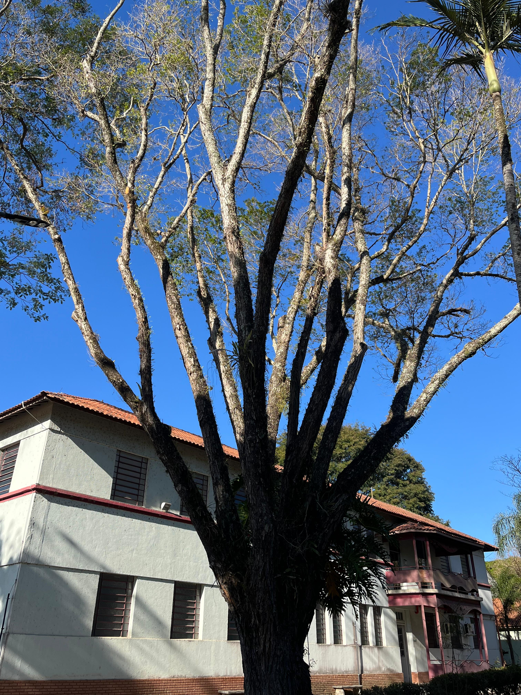

Tipuana
Tipuana tipu

Informações Botânicas
Nome Científico:
Tipuana tipu
Família:
Leguminosae-papilionoideae
Origem:
Bolívia e Norte da Argentina
Descrição:
Árvore de grande porte (12 a 15 metros), caducifólia, ou seja, perde suas folhas no inverno. Seu tronco tem casca pardo-clara com sulcos e rachaduras, e sua copa é ampla e arredondada, proporcionando excelente sombra. As folhas são compostas, em formato de pena, e na primavera a árvore se cobre de flores amarelas em formato de borboleta. Seu fruto é alado, do tipo sâmara, que gira como um helicóptero ao cair. É uma árvore de crescimento rápido e muito resistente.
Características Especiais:
- Chuva de Ouro: Na primavera, sua floração amarela intensa forma um "tapete de ouro" no chão.
- Fruto Helicóptero: Seu fruto possui uma asa que o faz girar ao cair.
- Perde as Folhas: Derruba completamente sua folhagem nos meses mais frios.
- Sombra Densa: Sua copa ampla é excelente para criar áreas de sombra.
- Crescimento Rápido: Adapta-se bem a ambientes urbanos e cresce rapidamente.